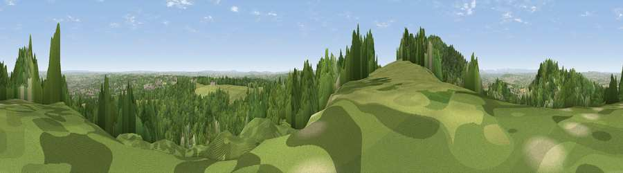

Viewpoint near Little Wenlock
#8039 in England · top 24% of its area beats it · near Little WenlockThe view, rendered

A 360° render of this exact spot computed from the terrain model, tree cover and land cover — summer colours, afternoon light, calibrated against photographs of famous viewpoints. Real trees, hedges and buildings will differ in detail.
The panorama
Grey silhouette: terrain skyline in each direction (720 bearings, Earth curvature and refraction included). Dashed green: skyline with trees (+15 m) and buildings (+8 m) as obstacles. Blue strip: how far the ground is visible on each bearing.
Where the view opens
Wedge length = distance to the farthest visible ground on that bearing (vegetation-aware). Rings at 10, 25 and 50 km.
What fills the view
62% woodland · 23% grassland · 9% cropland · 6% built-up
Angular shares of the visible panorama (visual magnitude), not map area. Landscape diversity 0.45 (0–1 Shannon).
Key numbers
More beautiful places nearby
The staircase of upgrades: each row has a higher view potential than everything closer. Driving times are estimates from straight-line distance, calibrated against real road routing — check an actual route before setting out.
| Place | Direction | Drive | Score |
|---|---|---|---|
| The Ercall | NW · 1 km | ~3 min | 79.4 |
| Viewpoint near Little Wenlock | WSW · 2 km | ~5 min | 84.2 |
| The Wrekin | WSW · 2 km | ~6 min | 85.0 |
| Viewpoint near Little Wenlock | WSW · 3 km | ~7 min | 86.6 |
| North Hill | S · 64 km | ~87 min | 86.8 |
| Worcestershire Beacon | S · 65 km | ~88 min | 87.1 |
| Viewpoint near Cartmel | N · 173 km | ~194 min | 87.2 |
| Viewpoint near West Quantoxhead | SSW · 175 km | ~196 min | 87.9 |
52.67779, -2.51874 · source: screening · position refined by local search. Computed location — check access rights before visiting.